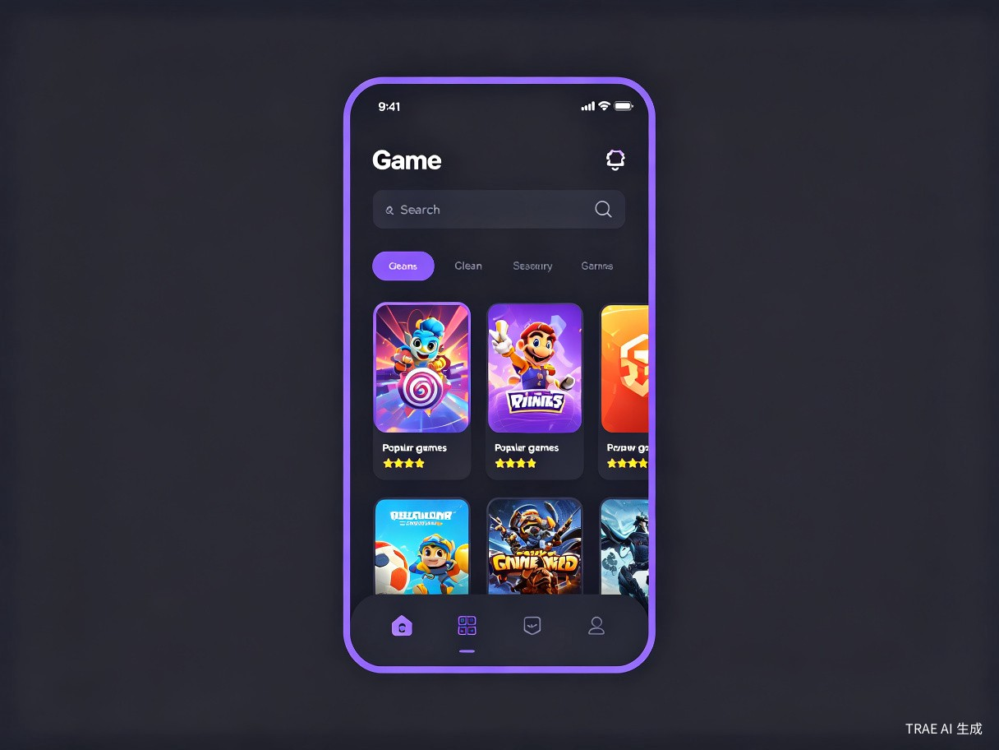
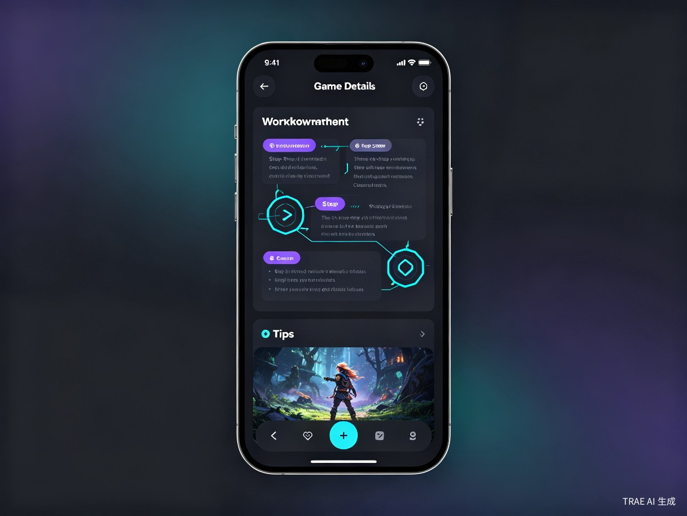

一款基于 AI 智能聚合的游戏攻略查询 APP，输入游戏名称即可获取全网最全面的攻略玩法、隐藏彩蛋与进阶技巧
GameMaster 攻略大师的定位与核心价值
核心理念：让每位玩家都能在最短时间内找到最精准的游戏攻略，告别信息碎片化与搜索低效。
GameMaster 是一款面向全平台游戏玩家的智能攻略聚合查询应用。用户只需输入游戏名称，即可一键获取该游戏的 全流程攻略、角色培养方案、隐藏任务触发条件、BOSS 打法技巧、装备搭配推荐 等结构化内容。
不同于传统攻略网站的信息堆砌，GameMaster 通过 AI 智能解析与社区众包相结合的方式，将散落在各大论坛、视频平台、Wiki 中的攻略内容重新组织，以 清晰的时间线、步骤卡片、图文混排 形式呈现，大幅提升阅读效率。
支持 PC、主机、手游、独立游戏等全品类，涵盖 Steam、Switch、PS、Xbox、iOS、Android 等平台。
基于大语言模型自动抓取、解析、归纳全网攻略内容，去重降噪，保留精华。
玩家可提交自己的攻略心得，经审核后纳入知识库，形成正向内容飞轮。
支持攻略内容离线下载，地铁、飞机上也能随时查阅，无需担心网络问题。
当前游戏玩家获取攻略时面临的核心问题
攻略分散在 B站、贴吧、NGA、Steam 社区、Fandom Wiki 等数十个平台，玩家需要在多个 App 间反复切换。
传统搜索引擎对游戏攻略的索引质量差，大量过时、错误、重复内容充斥结果页，筛选成本高。
视频攻略虽然直观，但无法快速跳转到特定关卡，且流量消耗大，不适合碎片化阅读场景。
传统 Wiki 页面排版混乱、广告多、缺少结构化导航，移动端阅读体验尤其糟糕。
GameMaster 的核心交互流程与界面设计
GameMaster 采用 "搜索即服务" 的设计理念，将复杂的攻略检索简化为三个步骤：输入游戏名 → 选择攻略类型 → 查看结构化内容。整个流程控制在 10 秒以内完成。


flowchart LR
A[打开APP] --> B[搜索/浏览游戏]
B --> C[选择攻略类型]
C --> D[查看结构化攻略]
D --> E[收藏/分享/反馈]
E --> F[离线缓存]
F --> G[社区投稿]
| 攻略类型 | 内容结构 | 适用场景 |
|---|---|---|
| 主线流程 | 章节 → 关卡 → 步骤卡片 → 注意事项 | 推进剧情、卡关求助 |
| 角色培养 | 属性分析 → 技能加点 → 装备推荐 → 配队方案 | RPG、卡牌、养成类游戏 |
| BOSS 攻略 | BOSS 机制 → 阶段拆解 → 应对策略 → 推荐阵容 | 动作、魂类、副本游戏 |
| 收集要素 | 地图标记 → 获取条件 → 图文对照 → 进度追踪 | 开放世界、探索类游戏 |
| 成就/奖杯 | 成就列表 → 解锁条件 → 速通技巧 → 视频演示 | 全成就党、奖杯猎人 |
| 隐藏内容 | 触发条件 → 具体步骤 → 彩蛋解析 → 奖励说明 | 彩蛋发现、深度探索 |
GameMaster 的六大功能模块详解
支持模糊搜索、拼音搜索、别名识别（如 "老头环" → "艾尔登法环"），自动联想热门游戏与攻略关键词，搜索结果按相关度与新鲜度双重排序。
基于大语言模型实时生成简明攻略摘要，将长篇视频攻略自动转录为步骤化文本，支持多语言翻译，让海外游戏攻略不再成为障碍。
用户可标记已完成的攻略步骤，APP 自动保存阅读进度，支持跨设备同步。对于收集类攻略，提供 checklist 式进度追踪。
每篇攻略下方开放评论区，支持图文混排评论、攻略纠错、版本更新提醒。高贡献用户可获得 "攻略达人" 认证标识。
支持整篇攻略或整个游戏攻略包的离线下载，采用高效压缩格式，1GB 存储空间可缓存约 500 篇完整攻略。
根据用户的游戏库、浏览历史、收藏偏好，智能推荐相关攻略与新游资讯，打造专属的游戏内容信息流。
基于 TRAE 技术栈的系统设计方案
flowchart TB
subgraph Client["客户端层"]
A1[React Native 跨端 APP]
A2[离线存储 SQLite]
end
subgraph Gateway["网关层"]
B1[API Gateway]
B2[CDN 静态加速]
end
subgraph Service["服务层"]
C1[游戏搜索服务]
C2[攻略聚合服务]
C3[AI 解析服务]
C4[用户中心服务]
C5[社区互动服务]
end
subgraph Data["数据层"]
D1[(PostgreSQL 主库)]
D2[(Redis 缓存)]
D3[(Elasticsearch 搜索)]
D4[(对象存储 OSS)]
end
subgraph AI["AI 层"]
E1[LLM 内容解析]
E2[Embedding 语义检索]
E3[OCR 图文识别]
end
Client --> Gateway
Gateway --> Service
Service --> Data
Service --> AI
采用 React Native + Expo 构建，一套代码同时覆盖 iOS 与 Android，热更新能力确保攻略内容实时同步。
接入大语言模型 API，对抓取到的原始攻略进行语义理解、结构化提取、多语言翻译，输出统一格式的攻略数据。
Elasticsearch + 向量数据库混合检索，支持关键词匹配与语义相似度搜索，确保搜索结果精准召回。
用户数据加密存储，攻略内容审核流水线自动过滤违规信息，确保社区环境健康。
目标市场规模与竞品格局
| 竞品 | 类型 | 优势 | 劣势 |
|---|---|---|---|
| Fandom Wiki | 百科型 | 内容全面、社区活跃 | 排版混乱、广告多、移动端差 |
| 小黑盒 | 社区型 | 国内用户多、社交功能强 | 攻略深度不足、信息分散 |
| Bilibili | 视频型 | 视频直观、UP主生态丰富 | 检索困难、无法快速定位、流量大 |
| 游民星空 | 媒体型 | 编辑内容专业 | 更新慢、互动性差、广告多 |
| GameMaster | 聚合型 | 结构化、AI驱动、离线可用 | 初期内容积累需时间 |
市场机会：据 Newzoo 数据，2025 年全球游戏玩家已突破 33 亿人，其中超过 60% 的玩家会在游戏中遇到卡关或寻求攻略的情况。当前市场上缺乏一款真正以 "攻略查询效率" 为核心体验的产品，GameMaster 正是填补这一空白。
从原型到上线的四阶段路线图
完成核心搜索功能与 50 款热门游戏的攻略数据接入，搭建基础 UI 框架，进行小范围内测。
集成 LLM 内容解析与自动生成能力，实现攻略结构化模板，上线进度追踪与收藏功能。
开放用户投稿与评论系统，扩展至 500+ 游戏，上线离线模式与个性化推荐。
引入会员增值服务、游戏联运、精准广告等商业模式，建立攻略创作者激励体系。
盈利模式与长期愿景
提供去广告、无限离线下载、独家高阶攻略、优先客服等会员权益，月费 9.9 元 / 年费 68 元。
与游戏厂商合作，在新游上线期提供独家攻略内容，获取 CPA/CPS 分成收入。
基于用户游戏偏好推送相关游戏、外设、周边广告，CTR 预计高于行业均值 3-5 倍。
向游戏厂商提供攻略内容托管、玩家行为数据分析、社区运营工具等 B 端服务。
长期愿景：成为 全球最大的游戏攻略知识图谱平台，连接每一位玩家与每一场冒险。未来可扩展至游戏 AI 助手、实时语音攻略、AR 游戏指引等创新场景。